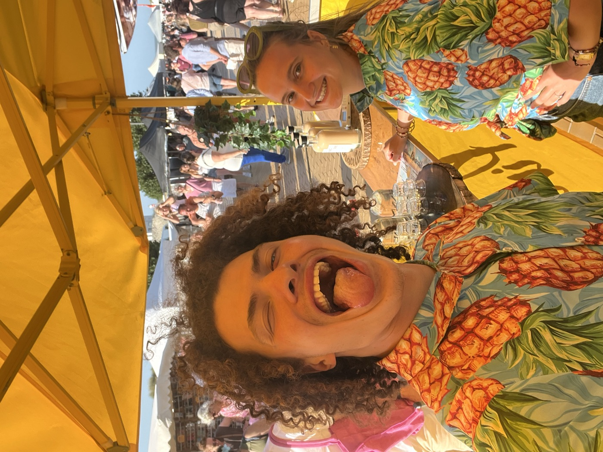

Het begon simpel. Twee broers uit Dilbeek die samen iets wilden maken — geen fabriek, geen groot plan. Gewoon een keukentafel, een recept en heel veel proberen tot het precies goed smaakte.
Wat een zomerproject moest worden, stond een paar maanden later elk weekend op de markt. Zelf gemaakt, met de hand gebotteld, fles per fles. En steeds meer mensen die terugkwamen met dezelfde vraag: "Hebben jullie er nog?"
"We maken alles nog altijd zelf. Precies zoals op dag één."

Intussen staan we op markten en festivals door heel het land. Wat hetzelfde bleef: het is nog altijd ons twee, onze handen en dezelfde zorg voor elke fles die de deur uitgaat.
En dat blijft zo. Zelfgemaakt in België — en dat proef je.
👐
Zelfgemaaktdoor ons twee
🇧🇪
Belgischuit Dilbeek
🎪
Op de marktelk weekend